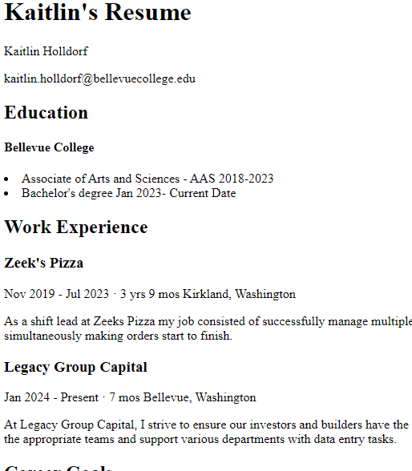
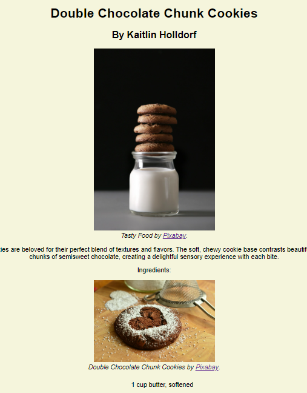
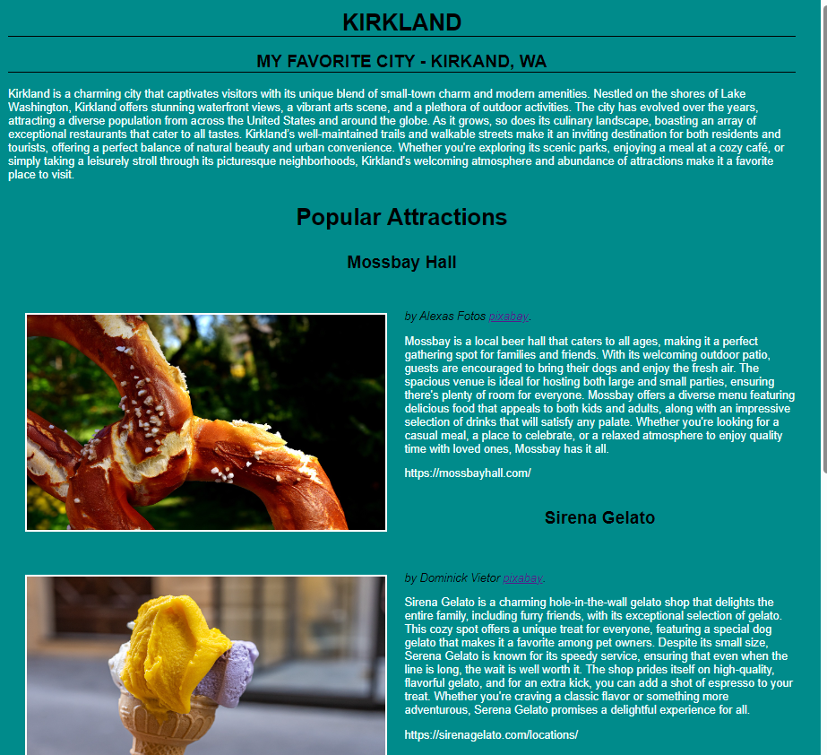
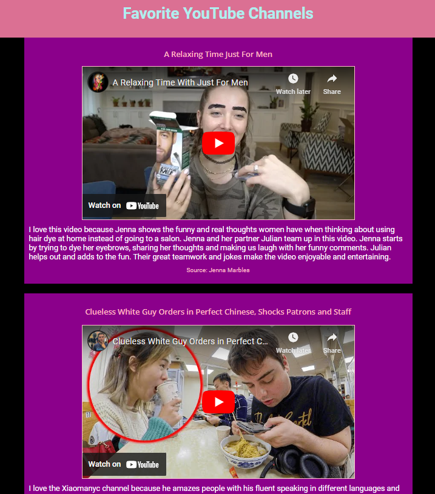

Resume

This is my first project my Web Project 1 . This resume project showcases my journey through education and work experience, highlighting key roles I've held. From managing shifts and teams at Zeek's Pizza to providing support at Legacy Group Capital, each position has contributed to my growth and skill development. My goal is to continue advancing in my career, building on these experiences to achieve success and make a positive impact in any field I pursue.
Chocolate Chunk Cookies

This Web Project 2 is a recipe for chocolate chunk cookies, one of my favorite treats to enjoy, especially with a glass of milk. I'm particularly proud of this site because it was my first time experimenting with color. I feel that the combination of font colors and images creates a dynamic and visually appealing experience. The design choices reflect my growing skills in web development, making this project a meaningful milestone for me.
My Favorite Places
4
This is my favorite project because I was finally able to align images perfectly with the text, achieving a harmonious balance on the webpage. I’m especially proud of the overall aesthetic, as it reflects my attention to detail and growing confidence in web design. The seamless integration of visuals and text makes the site both visually appealing and easy to navigate, which is something I’ve worked hard to accomplish.
Multimedia

I enjoy this project because it was my first experience working with sections, and I was able to align all the videos and text perfectly. The precision in layout and the seamless integration of different elements made the webpage come together beautifully, and I’m really proud of how it turned out.